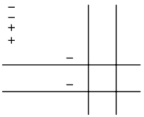
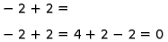
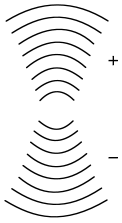

Беседа 3464 от 3877 · Беинса Дуно
Разумна почивка
„Добрата молитва“
„Цветята цъфтяха“
(Прочетоха се темите „Защо умира човек“ и „Какво съм научил“.)
„Мислѝ, право мислѝ“
Трудно е, когато някой певец иска да даде концерт, кои песни да избере. Някой път се безпокои певецът кои песни да избере. Или цигуларят трябва да изсвири нещо, намира се в трудно положение. Когато говорим, трябва да намерим някой предмет. Намирам, че обикновените хора много лесно намират предмет. Две жени два часа говорят, намират тема. Тук не може да си развивате темите, пък те много лесно ги развиват. Веднъж във Варна слушах една гагаузка, три часа говори, скарала се със съседката си, българка. Три часа говори, нарежда като оратор думите си, разхожда се. Най-после казва: „Кажи де!“ Три часа говори, доказва като някой прокурор, една обвинителна реч по всичките правила. Най-после казва: „Какво ще кажеш? Кажи, да видим.“ Сега, като дойдете тук, казвате, че не знаете. Много голяма скромност имате, много скромни сте.
Най-първо човек има доста да изучава в живота. Има да изучава тялото си. Някой път някой певец иска да пее, пък се случва, че се простудил и каналите, от които излизат отровни вещества, наместо да слизат в носа, слизат в гърлото. Горкият – иска да пее, но тия нечистотии се набрали, той трябва да се изкашля. Пазете се да не отиват тия вещества в каналите. Някой път се запушват каналите ви. Слюнката засъхва и тогава трябва да намажеш гърлото си с влага. Не е хубаво да засъхва гърлото. По някой път засъхват очите, някой път са по-влажни. Нито голямата влага е полезна, нито пък сушата. Някой път започват да се зачервяват очите. Този човек е динамичен. Червеният цвят започва да се явява на клепачите, война иска човекът. Казва: „Хич не ме бутай, червени ми са очите.“
Казвам: Ако две сестри, една млада и една стара, ги турите да говорят, как ще говори младата и какъв ще бъде предметът, старата какво ще говори? Да допуснем, едната е женена, другата е неженена. Неженената за какво ще говори? Ще говори за туй, което не е. А пък женената ще говори за туй, което е. Онази предполага, другата вече знае работата. Погрешката е: онази, неженената, преценява работите, туря туй, което не е, казва: „Много хубаво е“. Онази, женената, ги подценява. Защо едната ги надценява, а другата ги подценява? Когато обичаме някого, винаги туряме туй, което не е. Когато не го обичаме, туряме туй, което е. Какво му туряме? Казвате: „Той не ме обича.“ Много естествено, не е намерил човек предмет да обича. Може ли да обичаш туй, което не е? „Той не ме обича.“ Ти за него не си предмет. Ти не съществуваш за него. Ти като една вещ си в света, но за да те обичат, твоята [душа] трябва да се прояви. Ако вие туряте хубави дрехи на една восъчна кукла, заслужава или да я обичате, защото има хубави дрехи? Че някой има хубави дрехи – той може да е кукла. В света душата може да се обича.
Казвам: Дотогава, докато човешката душа не се проявява, любовта не може да се проявява. За мене ето какво е любовта, в най-простата идея изразена: при 30 градуса водата не може да се прояви, тя е много скържава, каквото го вземе, го задига, капка вода не дава. При 30 градуса студ любовта не може да се прояви. Водата при 30 градуса студ е на лед. Какво ще правиш този лед? Може да четеш много молитви, можеш да кажеш: „Студен си, взел си всичко“ – той все ще мълчи. Казвам: „Прав си, каквото искаш.“ Щом го напече слънцето, започне да пуща нещо от него. Всеки един от вас може да каже тази реч. Да приложим тази реч в живота. Всеки един от вас може да има идеята, че е певец. Всеки е певец, но по някой път има препятствие, не може да пее. Гласът не му се подчинява. Неговата музикална ципица, като иска да пее, казва: „Не съм разположен.“ Някой път нашето гърло прилича на онази дъщеря на един богат българин, била доста видна. Дошли му гости, искал да я покаже; била красива, учена, но доста своенравна. Бащата казва: „Ела да те представя.“ Казва: „Не искам да се срещам, да си вървят!“ Бащата отива при тях, казва: „Ще извините, малко е неразположена, трескаво състояние има.“ Извинява се веднъж, но ако втори, трети, четвърти път все като идват гости, все тъй става, как ще извиниш работата? В края на краищата какво извинение ще дадеш? Сега аз ви представям един изключителен пример. Такъв пример на Изгрева го няма, вън има.
Едно състояние има в нас. Някой път ние сме неразположени. Много естествено, боли те кракът, така те боли, че сълзи излизат – какво ще те хваля? Кракът те боли, направиш гримаса. Онзи, когото не болят краката, казва: „Няма нищо.“ Няма нищо за тебе, но за мене? Ние сега живеем във времена, дето много работи са изостанали недоправени, ние трябва да ги доправим. Като влезем в една къща, трябва изново да се поправи, да не виждаме неудобствата на къщата. По някой път, когато сме недоволни от живота, има много неудобства. За пример, в живота трябва да имаш вяра. Вярата има един център в главата, пък има и жлеза. Сега учените хора намериха центъра на вярата, но жлезата на вярата не са намерили. И аз няма да я кажа – то е една тайна. Като я намерят учените хора, и аз ще ви кажа. Седиш ти и си се обезверил. Обезверяването значи: вярата ти е отслабнала. Щом вярата ти е отслабнала, работите са тръгнали назад. Щом вярваш положително, всичко върви положително. Щом престанеш да вярваш, вече работите вървят зле.
За пример, по някой път говориш за невидимия свят. В невидимия свят има същества, които говорят много тихо, отличен слух трябва да имаш, едва се чуват. Нашето тихо говорене е силно за тях. Нашият говор, пренесен в небето, е цяла буря, гръмотевица, която може да разруши всичко. Благодарение, че хората не могат да влязат такива, каквито са, в оня свят – ако биха влезли, всички неща биха ги разрушили. Някои неща хората са разбрали. Казва: „Ти ще станеш богат“ – изведнъж ти допада. „Ти ще осиромашееш, ще изгубиш богатството си“ – ти започваш да се съмняваш вече. Много естествено, за мене богатството е много голяма работа. Зимно време при 30 градуса студ може да имаш вода колкото искаш. Лятно време при 50 градуса топлина всичкото богатство от леда ще се разтопи. Значи ако един човек е осиромашал, лятото е дошло, 50 градуса топлина има. Какво представя лятото? Какво представя единицата? Един лев? Единицата представя началото на живота. Едно значи начало, започна животът. Този живот ти носи всичките блага като едно семе, което Бог е вложил. Започва една работа с единица – радвай се, че онова, което Бог е вложил, гледай го да се прояви, не да се проявяваш ти, не да се проявяват твоите черупки, които имаш, но да се прояви съдържанието, което има единицата.
Казвам: Едно-то е пролетта, началото на живота, две-то е лятото, жертвата е то. Числото 2 ние не го обичаме, понеже не искаме да жертвуваме. Най-малко хората са готови за жертва. Като дойде до жертвата, там идат всички противоречия. Скарването какво е? Някой се обидил, защо? Някой се обидил, защото не му си казал това, което той иска. За работата не си му платил това, което сам си оценява. В бъдещата култура като наемеш един работник, ти няма да оценяваш колко струва работата, но самият работник ще оцени работата си. Колкото иска – няма да кажеш нищо. Каже 15, 20, 300, 500 лева – няма да му отбиваш. Да допуснем, че аз държа този, новия морал. Имам работници, ако дойде някой и не може да направи една работа така, както трябва, аз нищо няма да му кажа, но ще му платя колкото иска.
Аз съм ви привеждал този пример: Един американец, който обичал много музика, обичал много да свири на цигулка, чул, [че] ще дойде един знаменит европейски виртуоз, но се случило, че тренът закъснял и той пропуснал концерта. Вечерта към 11 часа намира хотела и отива там. Виртуозът вече се съблякъл да си почива от концерта, този хлопа. Казва: „Господине, искам да ви чуя как свирите.“ Казва: „Свърших концерта, сега искам да си почина.“ – „Аз ида отдалеч, не си отивам, искам да ми свирите.“ – „Скъпо струва.“ – „Колко струва? За 50 долара ще ми свирите ли?“ – „Не свиря за 50 долара.“ – „За 100?“ – „И за 100 не свиря.“ – „За 200 да ти дам?“ – „Не свиря.“ – „За 300?“ – „Не свиря.“ – „За 1000 долара?“ Става, взема цигулката и му свири. Цигуларят отвътре, онзи отвън. Дава му 1000 долара. След това американецът иска цигулката му, да му я даде, че той да посвири, за да се произнесе дали може да стане нещо от него. Дава му цигулката, дава му още 1000 долара, за да се произнесе за неговото свирене, стават 2000 долара. Свири му той и виртуозът казва: „Доста заложби има в тебе.“ – „Тъй ли? Много добре!“ Сега кажете ми: колко часа продължила тази работа? Колко предполагате? Колко време допущате, че са говорили двамата? Може този пример да е верен, може да не е верен, но близо до ума е. Вий бихте ли дали 2000 долара? Те са 200 000 лева. Да дадете 200 000 лева, да ти свири – 100 000, да го чуеш и 100 000, да те прецени ще стане ли от тебе един ден нещо. Този човек има преизобилно пари. 200 000 лева са малко за него.
Има неща във вас, които ви са дадени и които струват много повече, отколкото вие мислите. Има картини при изгрева на Слънцето, такива гледки струват 400–500 000 лева. Когато на тебе ти дадат това богатство, не го оценяваш. Съвременните хора си набират нещастия от много спане: не лягат навреме, когато трябва да спят, и не стават навреме, когато трябва да станат. Знаете защо не можете да спите? Много естествено е това. Тази работа е много проста. Кокошките по кое време лягат? Те знаят, че когато залезе Слънцето, има много тренове за другия свят, съобщенията за другия свят са много добри, но късно, към 10–12 часа, треновете са редки, ще трябва да чакаш, не можеш да идеш в другия свят, ще бъдеш буден, на гарата, не можеш да се качиш. Щом се качиш, е лесно, ще те поеме тренът, да те носи за другия свят.
Разправяше ми един познат, казва: „Никога не съм виждал такъв сън. Денем, спя около два часа и гледам едно море тъй живо, че трябваше да бъда художник. Аз седя над водата, гледам една лодка, гледам двама души, единият плава, другият не може да плава. Онзи, който плава, иска да избива онзи, който не може да плава. Виждам и един голям параход, виждам приближават се тия двамата, виждам телата им – от бялата раса са, не са черни хора. В съзнанието си схващам, че единият иска да му помогне, другият изгуби съзнание. После и двамата видях с лицето нагоре. Ставам.“ Пита ме: „Какво означава това? Кажи ми как седях над водата. Наблюдавах много ясно морето, в живота си така ясно не съм наблюдавал.“ Казвам: Жлезата на твоето зрение се е пробудила, защото не само с центъра на зрението може да се вижда, но жлезата на зрението се е събудила, че виждаш работите. Искат да ти покажат, че морето е животът. Онзи, който изгуби съзнанието, загазил, влязъл в гъстата материя. Задушил се. Другият, главата му е над водата, той е господарят на положението. Той мисли, иска да събуди другия. Този може да е някой проповедник, може да е майка, може да му е син, може да дадете каквото искате тълкувание.
Казвам: Вий какво тълкувание ще му дадете? Вие ще му дадете някакво тълкувание. Тълкуванието е вярно само когато човек разрешава една задача и чувствува една приятност. Всеки човек има една жлеза вътре и той усеща една приятност, щом работите вървят добре. Когато имаш добро разбиране, пак усещаш тази радост. Жлезата е вътре. Тази жлеза показва същината на нещата. Същевременно този център се събужда отгоре. Докато не се събуди тази жлеза, нямаме ясна представа за онова, което става около нас. За пример, ядеш. Тази жлеза е много развита. С ума си може да мислиш много какво нещо е захарта, но като близнеш с езика си, щом близнеш захарта, веднага разбираш същината на меда, на захарта. Щом ядеш, определяш същината от ябълката, от крушата. Всички тия вкусове езикът ги различава. Ти го считаш този език като че ли е много лош. Доста голям специалист е. Като близнеш с езика, разпознаваш меда, отличаваш захарта, крушите, даже и със затворени очи – от сладчината ще познаеш какъв е предметът.
Казвам: Не осакащайте вашия вкус, чувствителността си. Често от много работа хората осакащат най-нежната страна, вътрешната страна на върховете на пръстите. Пръстите трябва да бъдат много чувствителни, да усещаш. Като пипнеш с ръката, може да познаеш този човек здрав ли е или не. Като пипнеш една здрава ръка, усещаш нещо приятно; като пипнеш някой, който не е здрав, като че пипаш изгоряло. Някой път се ръкувате с някой човек, който е здрав – усещате приятност. Някой път се ръкувате с някой човек и възприемате неговата енергия – тя показва, че е в едно болезнено състояние. Болезненото състояние – липсва му нещо. Недоимък има или излишък има. Излишъците трябва да се изхвърлят. Благото на новото иде и всеки човек трябва да възприеме новото благо, което иде от Бога. Някой ден благото седи само в това да срещнеш един твой приятел. С този приятел ти ще имаш една обмяна между него и тебе. Тази обмяна ще ти даде това, което ти искаш. Този ден най-голямото благо е да срещнеш един свой приятел или някой ден благото е да излезеш и да посрещнеш Слънцето и ти ще възприемеш това, което искаш. Ако не излезеш, ще изгубиш. Сега казвате: „Защо Слънцето всякога не може да даде своето благо?“ Не може Слънцето да ти даде своето благо, понеже теченията, които стават от сутрин до вечер, са разнообразни: човек до обяд възприема теченията, подир обяд човек е вече натоварен и той се намира в едно негативно състояние.


Някой път българинът много добре разрешава въпроса със стомната. През голямата дупка, дето влиза водата, не пие, но на дръжката, дето хваща стомната, направил една мамица. Икономисва енергията. Да дигаш тази стомна нагоре е много трудно и така да пиеш вода. Като тури устата на мамицата, изтегля водата, икономия има. Но ум се изисква да тури мамица на ръчката. Намерил се в трудно положение, докато тури на ръчката мамица, и да не дига да пие през гърлото, дето дошла водата и дето влязла през устата.

Та, казвам: Добър музикант е онзи, който примирява вълните. Като пее, че отрицателните и положителните вълни се съединяват. Един тон аз го считам като зрънце. Щом изпееш един тон, той е като житеното зърно, изниква. Значи може да даде семе.
Ре е спомагателен тон на до, ми е спомагателен тон на до, фа е спомагателен, сол е спомагателен, ла е спомагателен, си е спомагателен – дохождате до до на втората октава. Горно ре е пак спомагателен.
Основният тон ще даде основа, трябва да градиш. С до ти ще градиш. Ре ще ти покаже посоката на градежа. Вълните на ре се отличават от вълните на до. Вълните на ми се отличават от вълните на ре и до. Голямо различие има. Когато се взема ми – до–ре–ми, дойдеш до ми – много мек тон е, понеже минава през една област на най-малко съпротивление. Някога, когато имате голямо съпротивление някъде, трябва да пеете ми, за да се научите да намирате пътя на най-малкото съпротивление. Някъде като се намираш в някоя разкашкана област, трябва да пееш ре, за да намериш твърда почва. В кашата някъде може да се удавиш. Ре върви по една устойчива почва.
Та, казвам: Онези от вас, които мислите, че разбирате живота, казвате: „Трудно ми е.“ Свила се топка на слънчевия възел. Пейте. Да имаш вяра, това е небесна музика. Да имаш надежда, това е небесна музика. Да имаш любов, това е небесна музика. Любовта като дойде, веднага онази мъчнотия, която имаш, ще изчезне.
Тук преди няколко деня дойде една сестра, еврейка, големи мъчнотии има. В какво седят мъчнотиите, да ви кажа. Някой път мъчнотиите седят, имаш да даваш. Или влюбил си се. Иска момата да се ожени – мъчнотия има. Тя не знае ще се жени той за нея или не. Сега тя най-първо се интересува този, когото обича, ще може ли да се ожени за него. После се интересува като се ожени, ще може ли да живее с него добре или не. Понеже той на едно увеселение се пошегувал и казал: „Аз намерих една 16-годишна, искам да се оженя заради нея.“ Тя не е на 16 години. Паднало е топка на сърцето. Тя казала: „Ти като се ожениш, ще дойда да ти честитя.“ „Казах го – казва –, но много ми е тежко.“ Казах ѝ: „Ти защо се заблуждаваш? Този, когото си избрала, той не е този. Той може да те опитва, пък може ти да си на 16 години и половина.“ Казва: „Не съм.“ Знаете какво значи 16 и половина? 16 значи: дяволът се катурва от трона – противоречията, които има, ще изчезнат. Че ще се жениш за 16-годишна показва, че работите ще станат по-лесно – дяволът го няма. 16 като дойде, дяволът бяга от него.
Аз нали съм привеждал този пример? Дяволът го е страх от жените. Лошите духове ги е страх от жените. Когато той се приближи в райската градина, страх го беше от Ева. Той я омота, трепереше да я залъже, защото другояче ще му побелее главата. Една жена се хвърлила в кладенеца, мъжът ѝ я вика отгоре, плаче заради нея. По едно време излиза един дявол, побелял. „Брей, казва, тази жена ме побеля!“ Черният дявол за половин час станал бял дявол. Казва дяволът: „Оставѝ се, дойде една жена, опасна работа, то огън, не се издържа, бягам от нея.“ Мъжът казва: „Така ли? Намерих цаката.“ Дошло му на ум да използува това. Отива при един болен, когото обсебили духовете и казва: „Жена ми иде!“
Духовете веднага бягат, защото ще побелеят. Или някъде духовете взели някого, мъчат [го] за пари. Като каже: „Жена ми иде!“, всички духове бягат. Прочул се навсякъде. Дяволът избягал, но българинът бил досетлив. Но ако тази жена не можеше да направи дявола да му побелее козината, тогава не върви тази философия.
Някой път вий намирате едно противоречие. Защо съществуват мъчнотиите в света? Сега, коя е най-голямата мъчнотия в света? Най-голямата мъчнотия е гладът. Няма по-голяма мъчнотия от жаждата и глада. Казва: „Защо иде гладът?“ Гладът е една сила. Като иде навреме, трябва да го посрещнеш, да му дадеш това, което той иска. Ако не му дадеш това, което той иска, той е генерал, веднага ще те арестува, ще те накара да приготвиш. Как така да не си приготвил? Ти трябва по-рано да си приготвил, той като дойде, да има какво да яде. Сега вие се спирате върху въпроса: защо Господ е направил света такъв? Този въпрос никак не го повдигайте, защото той е вечен принцип и не може да бъде другояче. Казва: „Ще има глад за Словото и по цялата Земя ще ходят, ще се лутат за Словото.“
Всичките хора, които работят, гладът ги заставя. Гдето има глад, там има учение, работа, всичко има; дето няма глад, нищо няма. Гладен човек не умира. От преядане умират хората, но от глад никога не умират. Някои умират от страх, но от глад – никога. В историята не съм намерил някой да е умрял от глад. От страх съм намерил, от преядане много съм намерил, от пресиляне, но от глад никой не е умрял. Защото гладът е един Божествен подтик. Имаш глад да учиш – учи! Ако учиш, Божието благословение ще дойде. Щом си гладен, благодари, да признаеш, че гладът е от Бога, веднага онова, което търсиш, ще го намериш. Щом не признаваш, че гладът е от Бога, каквото търсиш, няма да намериш. Признаеш, че сиромашията е от Бога и богатството е от Бога. Онзи, който те товари, и онзи, който те разтоварва, е от Бога. Животното само не се товари, товари го господарят и го разтоварва. Щом приемеш, че богатството е от Бога, ще приемеш, че и сиромашията е от Бога. Когато станеш сиромах, благодари, че Бог те освободил. Щом свършиш работата, богатството ще го вземе, за да си починеш. След като си починеш, пак ще ти даде богатството, да работиш. Богатството е работа, сиромашията – почивка. Знаете колко е приятно след като си пътувал дълго време, да седнеш някъде, да си починеш, да си починат мускулите и пак да станеш и да тръгнеш.
Сега на всинца ви трябва почивка. Знаете какво нещо е почивката? Хората не знаят да почиват. В почивката ще оставиш всичките мускули свободни. Ръката си ще оставиш така, ще отпуснеш мускулите, че като оставиш ръката, да пада. Ще се оставиш свободен. Казваш: „Какво ще стане?“ Стой спокойно и кажи: „Всичко е уредено.“ Че как не е? Че как да не е?
Двама приятели разисквали един научен въпрос. Казва: „Нищо не е уредено.“ Казва: „Легни на гръб.“ Онзи ляга. Другият бил снажен, задига един камък и го туря на корема му. Казва: „Ще ме смачка!“ Уреден ли е светът? Не е уреден. Кой може да го оправи? Онзи лежи, камъкът седи на корема му, не може да стане. Казва: „От кого зависи да оправи света?“ – „От мене. Аз, който турих камъка, съм в състояние да го оправя. Ще кажеш ли, че светът е уреден? Ако кажеш, че светът не е уреден, ще оставя камъка; ако кажеш, че е уреден, ще дигна камъка.“
Турил един камък Господ върху вас, вие казвате, че светът не е уреден – и камъкът седи отгоре. Вие постоянно поддържате, че светът не е уреден и камъкът седи отгоре ви. Когато Христос беше в гроба, вярваше, че ще извадят камъка. Този, който го тури, той и ще го отвали. Казвате: „Тази работа няма да се оправи.“ Остави тази работа, признай, че страданието е от Бога. Ти, казва, защо ме наказа? Ти имаш един добър начин да видиш Божиите пътища. Защо да не благодариш за онова, което става? Да допуснем сега, че аз нося един хляб, минал един пътник, аз съм вече ял. Минал пътник и яде сега. Аз може да му са скарам, защо яде без мое позволение. Аз трябваше да седя там. Този пътник минал и попитал: „Може ли от торбата да взема този хляб?“ Торбата му казва: „Може.“ Той взел и яде. Защо, когато аз взема и ям, да е в реда на нещата, защо да не е в реда на нещата и той като яде? Ида при неговата торба и аз ще поискам от торбата му. Той като яде от хляба от моята торба, и аз имам право да ям хляба от неговата торба. Ще попитам торбата, ще извадя и ще ям.
Казвам: Всичките страдания в живота са за наше добро. Ний не се радваме на радостите на другите хора. Ний, като видим, че някой човек се радва, нас ни е мъчно. Радвай се, понеже и той се радва. Този човек, един ден той ще те замести. Виждал съм много пъти двама души, единият взел една тежка раница, другият няма никаква раница. Като вървят, този без раницата каже: „Може ли да ти услужа?“ И той вземе раницата. Ако той носеше някаква раница, не можеше да услужи на другия. Той, като не носи никаква раница, може да услужи. Вие искате всичките хора да скърбят. Тогава кой на кого ще помага? Нека има някои, които да не скърбят. Тези, които не скърбят, са помощници. Следователно ти няма да търсиш един, който скърби, но ще търсиш един, който не скърби, който се радва.
Казва Господ: „Потърсете Ме в ден скърбен, в ден на мъчнотии.“ Бог е единственото същество, което не страда. Защо Бог не страда? Защото ние страдаме, Той всякога е свободен да ни помага. Той е единственото същество, което не страда. Той е единственото същество, което може да ни помага. Понеже няма страдания, всичките страдания ги събира и тогава ние придобиваме Неговото състояние, радваме се. Струва си Господ да ти помогне, да ти вземе товара. Казва: „Възложете товара си на Господа.“ Благодари, че страдаш – ще се запознаеш с Господа, с онзи, когото Господ праща да ти помага. Вие питате: „Защо ме прати Господ?“ Ти ще свършиш Неговата работа.
Вземете един тон до, който разтоварва, и вземете до, който натоварва. В дадения случай, като вземеш до, ще се разтовариш и ще се натовариш. Какво значи натоварване и разтоварване? Като обърнеш лъжицата нагоре, то е натоварване. Като обърнеш лъжицата с корема нагоре, то е разтоварване.
Разправят един пример за 12 души българи, които яли от един гивеч с една лъжица. Като минал заекът, нямало кой да извика „ху!“ по него. С една лъжица толкоз бързо яли, че на всички устата били пълни и никой не могъл да извика. Българинът много обича да извика, когато види заек да бяга. Като минал заекът, всички били с пълна уста, че нямало кой да извика: „Ху, брей!“ И вие съжалявате, че на заека не може да му извикате: „Ху, брей!“ Значи, 12 души могат да ядат с една лъжица!
Та, казвам: Първото нещо – отпочивайте си. Най-първо дене ще ви препоръчам да направите почивка на носа си. Усещате, че ви дразни. Не бутайте грубо носа си. Оставете устата си да си почине, после очите ви да си почиват. Вий сте си свили веждите – то не е почивка. Считайте света уреден, гледайте всичко туй, радвайте се, когато изгрява Слънцето, радвайте се на облаците, кажете: „Добре е, дъжд ще дойде, земята ще омекне.“ Докато правим едно упражнение, трябва да видим добрата страна. Оставете устата ви да си почива. Някои от вас много си стискате устата, неестествено е, не приижда достатъчно кръв. Оставете бърните си едва допрени, после благодарете, че Бог е направил една горна бърна и една долна. Горната дава, долната възприема. На някои от вас долната бърна е тънка. Някои от вас по бърните се познават, че не сте щедри. Не искам да говоря за това, понеже то е държавна тайна.
Вий все очаквате да ви дойде някакво благо отвън. Казвате: „Защо Господ да се не прояви?“ Вие очаквате все на вас да ви направят добро. Бъдете готови и вий да правите добро. Някой път казвате: „Мене ми дотегна да правя добро.“ Но нашето правене на добро е като онези хамали, които дигат чували. То не е правене на добро. Той го прави от немай-къде, не го прави от добрата си воля, понеже колкото чувала дигнал, по 10 стотинки на чувал. 100, 200, 300 чувала. От лакомия дига тия чували. Той вдигал 200 чувала, да вземе повече пари. Не е почивка. Като вдигнеш 200 чувала, какво ще спечелиш?
После, за да си починат очите ви, спирайте очите си на красиви неща. Когато сме в гората, да изберем най-красивите места. Ако е канара, избирайте, дето има красиви линии. Като поставите очите си, линиите на канарите действуват много хубаво. Или, ако сте в гората, изберете някой хубав пейзаж, или ако сте край някоя река, пак изберете някой хубав пейзаж и гледайте трептенията, които се отразяват във водата. Те действуват успокоително. Когато не сте спокойни, търсете най-хубавите линии, красиви места, или гледайте небето. Ако сте в града, изберете някоя хубава къща, че да остане красив образ. Или гледайте някой красив човек, обърнете внимание върху очите му, веждите, походката. В днешния порядък трябва да знаем как да си почиваме. Ще починат очите, да почине носът. Търсете цветя с хубаво ухание. Щом носът се дразни от някоя миризма, той не може да бъде спокоен. Често вие, като идете в града, понеже има неприятни ухания, докато идете на работа, вий сте неразположени. Туй неразположение става от нечистия въздух, от лошото ухание. Дразните се – минете през някоя улица, дето има хубаво ухание, дето има цветя. Казвате: „Де ще ги намерим?“ Сега говоря на вас, навсякъде можете да ги намерите.
Един [ден] трябва да ви изведа на екскурзия, да ви покажа как трябва да си почивате. Сега гледам, вий както ходите, не сте се научили още да си почивате. Не знаете какъв товар да турите. Вие с теглилка трябва да си турите товара. Някой път трябва да имате само 3 килограма на гърба си, някой път – едно кило, някой път – 2, някой път – 3, не повече от 12 кила трябва да носите. Някой път туряте 15, 16, 20, 25 кила. То няма никаква почивка. Нищо не се придобива. В природата всякога е предназначено според закона на хармонията – този товар, който ти се дава, дава ти се за услуга на човека. Една почивка трябва да има. Бог никога не претоварва. Ние себе си претоварваме. Той ни е дал, че където и да ида, няма да остана гладен. Бог ми е дал знание, като ида някъде, има болен – ще помогна и сърцето на този болен се отваря. Ако ида при някой човек, всичките хора сега са обременени, има вечен страх някой, че ще осиромашее, ще му кажа как да не осиромашее. Човек, който не дава, осиромашава. Стегнал се, богатството ще го изгуби. В Божествения закон обмяна трябва да има. Плюс и минус трябва да се сменят постоянно. В повишената интензивна деятелност на природата един плюс и един минус могат да се сменят хиляди пъти на полюсите. Да кажем, светлината, която за една секунда изминава 300 000 километра, знаете колко смени стават в една секунда на единия и на другия полюс? Светлината, която влиза в очите, 300 000 смени стават и пак продължи пътя си. Даже тия неща са непонятни за вас. Смените, които стават, не може да ги разберете. Не се обезсърчавайте от това.
Аз, който разбирам законите, гледам да пазя съзнанието си будно. Казвате: „Туй нещо няма да се поправи.“ Ще направиш една погрешка. Каквото може да стане в света, моментално може да се поправи. Взели ти нещо, дават ти друго. Какво има, че ти взели хляба? Взели ти твърдия хляб, ще ти дадат мек. Ние имаме теории, че студеният хляб е по-здравословен. Според мене топлият хляб е по-здравословен, отколкото студеният. Студеният хляб за пълните е на място, но за сухите хора не е на място. За сухите хора е топлият хляб, мекият хляб, изваден от фурната. Който е сух, топъл хляб да яде. Онзи, раз[по]ложеният, дай му сух хляб, нека да го дъвче, да има какво да работи. Пълничкият е разположен, по-мързелив е. Онзи, горкият, понеже е работил дълго време, дай му мекичък хляб, с много малко работа, да придобие повече.
Та, когато ви говоря за любовта, разбирам: Любовта дава ония всички неща, при които харчим най-малко енергия. Любовта е единствената сила, която успокоява и засилва човека. Любов, която не може да те успокои, която не може да обнови ума, сърцето, да обнови организма ти, тя не е още Божествена. По някой път и между растенията има сприхави. Познавам сприхави растения. Една круша, която има бодли, е сприхава. Виждал съм деца, качило се на крушата и не може да слезе. Със стълба го снемат. Нанякъде се подвижи, ранява го, боде го. Тази круша казва: „Не позволявам никой да яде от плодовете ми.“
Казвам: Ако вий сте една сприхава круша, мислите ли, че сте спокойни? Ний се намираме в един свят, дето всеки ден може да ни дразнят. Минава една кола, която не е направена музикално, дразни те. За бъдеще всички коли ще издават тонове. Като натоварят колата, ще издава или до, или ре, или ми. Като вървят две коли, ще имате секунда, терца, музикални тонове ще издават. Сега минава, има някакъв крясък, няма никаква музикалност. То е музиката на онези духове, които разрушиха света. Като се пръсне една граната, какъв звук издава? Не искаш втори път да чуеш този шум. Някой път аз гледам, извикаш. Да знаеш да направиш бележка, музикално да направиш бележката. (Учителят пее :
Върви по правия път,
той ще те изведе към целта.
Някой път бързате да направите някаква бележка някому. И аз правя бележка по някой път някому. Звука, който изпращам, той го поглъща. На някой човек правя бележка, той издава хармоничен отглас, има отражение. На някой правя бележка, има дисхармония. Грешката е в мен. Този човек поглъща тоновете. Щом поглъща тоновете, спада към друга гама, отдалече няма да му говоря. При него ще се приближа много близо и ще му кажа много тихо: „Добър човек си, като тебе няма друг.“
В живота си, с нашата небрежност, знаеш, колко неприятности си създаваме, като не знаем да мислим. Цяло изкуство е, да знаеш, да се разправяш с очите си, с ръцете си, с главата си. Някой път не знаеш къде да туриш ръцете си – в джоба или отзад. Да държиш ръцете отзад не е хубаво. Отзад може да ги държиш, когато имаш товар, помагаш си. Но да ги държиш, когато нямаш никакъв товар, не е хубаво. Не дръж ръцете си отзад. Едно време турците, като бяха в България, ръцете си държаха отзад. Казвах: няма да им върви. Турил си ръцете отзад, клати се и върви. Казвах: няма да им върви. Българите туряха ръцете отстрани. Отзад не си туряй ръцете, то е робство. Щом си туриш ръцете отзад, те са опашка. Понеже едно време, когато махал опашката отзад, мислил. Сега, като я няма, той си турил ръцете отзад, да мисли. Щом искаш ръцете отзад да ги държиш, за да накараш ума си да мисли, на много крив път си. Умът е в главата. Наместо отзад да си туриш ръцете, тури ги на челото. Някой иска да си почине – да тури ръцете си на челото. Някой е разтревожен – тури си ръцете на челото. Като гледате нещо грозно, тури ръцете си на очите, да не гледаш; но когато гледате хубаво нещо, отвори очите, не туряй ръцете си.
Аз съм чел много книги от окултната литература, но там нищо не е писано как да си почине човек. Общо казано да си почине. Има хубави места, красиви, някоя хубава картина, някой човек, някоя сграда, някое цвете, нещо красиво, някой скъпоценен камък – намери нещо красиво да гледаш, за да си починеш. Туй, дето хората носят скъпоценни камъни, то е за почивка на нервното състояние. В нервното състояние, човек харчи грамадни енергии. Не се позволява да харчи човек енергията. Старостта е недоимък на тази енергия и се изисква дълго време да се набави. Та, казвам: Не трябва да се иждивява енергията излишно, която имаме.
(Учителят пее „до“. Всички пеем „до“, после „добро“, заедно с Учителя. Той изпя много пъти „добро“, в разни модулации.) Това е за почивка сега.
Две успоредни положителни и две успоредни отрицателни дават, градят.
„Отче наш“
5-а лекция от XXI година
на Общия окултен клас (1941–1942),
държана от Учителя
на 29.Х.1941 г., сряда, 5 ч. сутринта,
София – Изгрев.